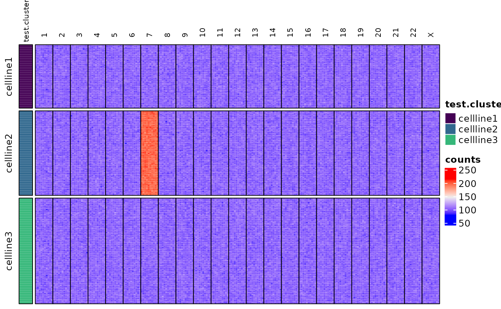

Creates a heatmap of data from the indicated TapestriObject assay slot using the ComplexHeatmap package.
Heatmaps are generated as transposed (i.e. x-y flipped) representations of the assay matrix.
Additional ComplexHeatmap::Heatmap() parameters can be passed in to overwrite defaults.
Usage
assayHeatmap(
TapestriExperiment,
alt.exp = NULL,
assay = NULL,
split.col.by = NULL,
split.row.by = NULL,
annotate.row.by = NULL,
color.preset = NULL,
color.custom = NULL,
...
)Arguments
- TapestriExperiment
TapestriExperimentobject- alt.exp
Character,
altExpslot to use.NULL(default) uses top-level/main experiment.- assay
Character,
assayslot to use.NULL(default) uses first-indexed assay (usually "counts").- split.col.by
Character,
rowDatacolumn to split columns by, i.e. "chr" or "arm". DefaultNULL.- split.row.by
Character,
colDatacolumn to split rows by, i.e. "cluster". DefaultNULL.- annotate.row.by
Character,
colDatacolumn to use for block annotation. DefaultNULL.- color.preset
Character, color preset to use for heatmap color, either "copy.number" or "copy.number.denoise" (see
Details). Overridescolor.custom.NULL(default) uses defaultComplexHeatmapcoloring.- color.custom
Color mapping function given by
circlize::colorRamp2().color.presetmust beNULL.- ...
Additional parameters to pass to
ComplexHeatmap::Heatmap().
Options for color.preset
Examples
tap.object <- newTapestriExperimentExample() # example TapestriExperiment object
#> ℹ Moving gRNA probe to `altExp` slot "grnaCounts".
#> ℹ Moving barcode probe to `altExp` slot "barcodeCounts".
#> ℹ Moving chrY probe(s) probe_231, probe_232, probe_233, probe_234, probe_235, probe_236, probe_237, probe_238, probe_239, and probe_240 to `altExp` slot "chrYCounts".
assayHeatmap(tap.object,
assay = "counts", split.row.by = "test.cluster",
annotate.row.by = "test.cluster", split.col.by = "chr"
)
